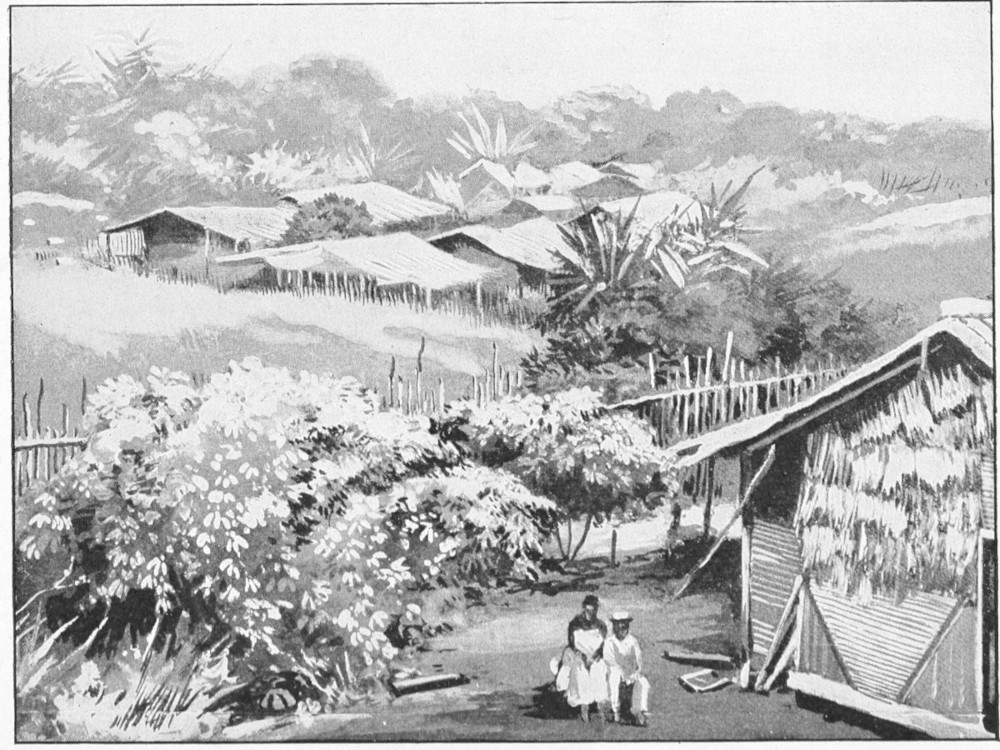
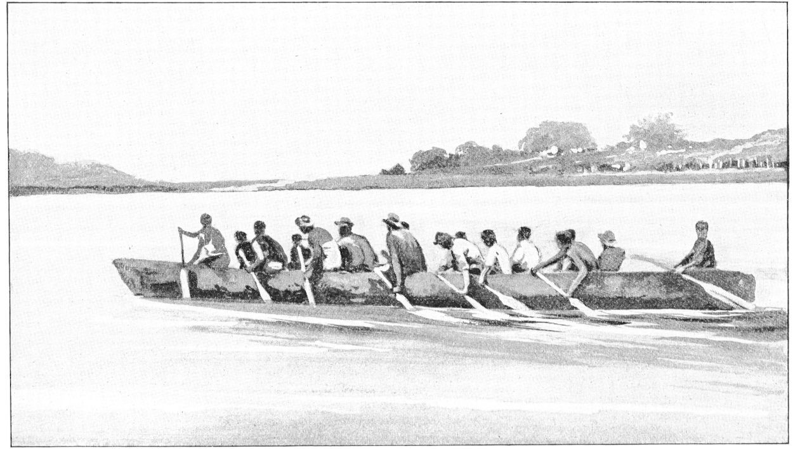
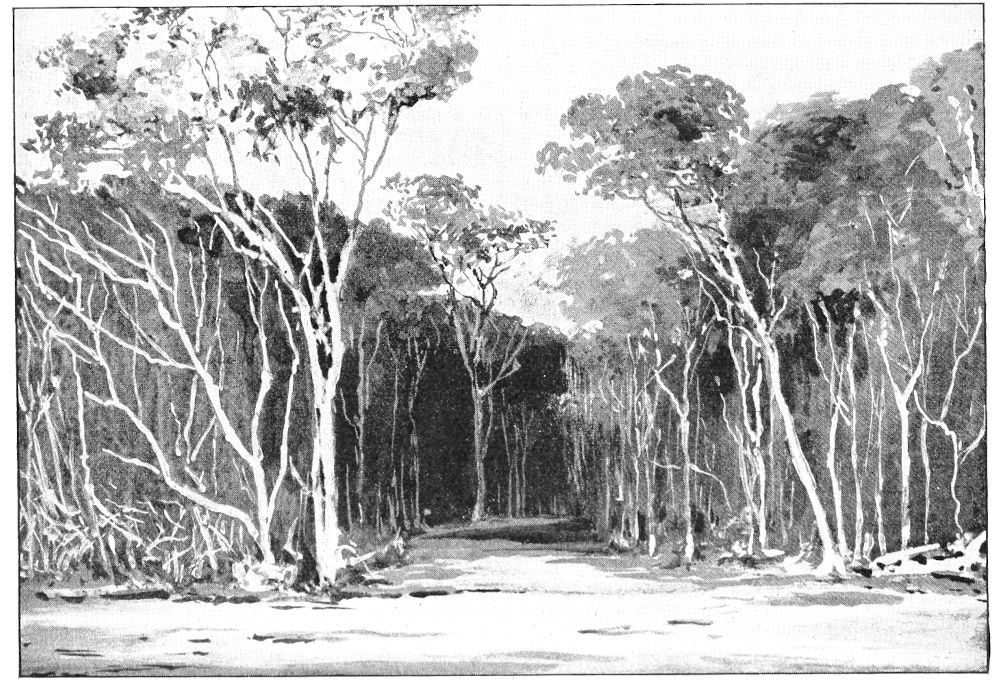
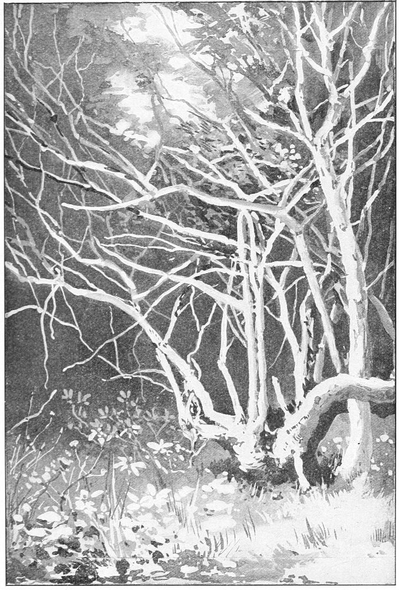
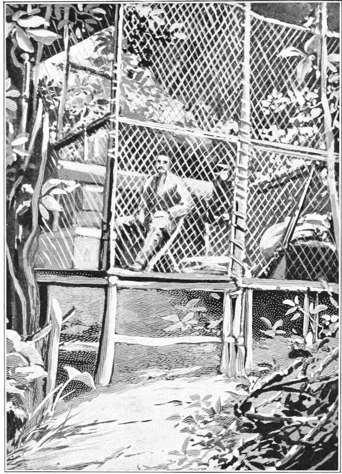

Caged in an African Jungle—The Cage and its Contents—Its Location—Its Purpose—The Jungle—The Great Forest—Its Grandeur—Its Silence
It will be of interest to the reader to know the manner in which I have pursued the study of monkeys in a state of nature, and the means employed to that end. I, therefore, give a brief outline of my life in a cage in the heart of the African jungle, where I went in order to watch the denizens of the forest when free from all restraint.
Having for several years devoted much time to the study of the speech and the habits of monkeys in captivity, I formulated a plan of going to their native haunts to study them under more favorable conditions.
In the course of my labors up to that time, I had found that monkeys of the highest physical types have also higher types of speech than those of the inferior kinds. In accordance with this fact, it was logical to infer that in the anthropoid apes—they being next to man in the scale of nature—would be found the faculty of speech developed in a higher degree than in the monkeys. The chief object of my study was to learn the language of animals. The great apes appeared to be the best subjects for that purpose, so I turned my attention to them. The gorilla was said to be the most nearly like man, and the chimpanzee next. There were none of the former in captivity, and but few of the latter; and those few were kept under conditions that forbade all efforts to do anything in the line of scientific study of their speech. As the gorilla and the chimpanzee could both be found in the same section of tropical Africa, that region was selected as the best field of operation; and, in order to carry out the task assumed, I prepared for a journey thither.

NATIVE VILLAGE AT GLASS GABOON
(From a Photograph.)
The locality chosen was along the equator and about two degrees south of it. This region is infested with fevers, insects, serpents, and wild beasts of divers kinds. To ignore such dangers would be folly; but there was no way to see these apes in their freedom, except to go and live among them. To lessen in a degree the dangers incurred by such an adventure, I devised a cage of steel wire woven into a lattice with a mesh one inch and a half wide. This was made in twenty-four panels, each three feet and three inches square, set in frames of narrow iron strips. Each side of the panels was provided with lugs or half hinges, so arranged as to fit any side of any other panel. These could be quickly bolted together with small iron rods, and when so joined they formed a cage of cubical shape, six feet and six inches square.
Any one or more of the panels could be used as a door. The whole structure was painted a dingy green, so that when erected in the forest it was almost invisible in the foliage.

A NATIVE CANOE
(From a Photograph.)
While this cage was not strong enough to withstand a prolonged attack, it afforded a certain degree of immunity from being surprised by the fierce and stealthy beasts of the jungle, and would allow its occupant time to kill an assailant before the wires would yield to an assault from anything except elephants. It was not, indeed, designed as a protection against them; but, as they rarely attack a man unless provoked to it, there was little danger from that source. Besides, there are not many of those huge brutes in the part where this strange domicile was set up.
Through this open fabric one could see on all sides without obstruction, and yet feel a certain sense of safety from being devoured by leopards or panthers.
Over this frail fortress was spread a roof of bamboo leaves. It was provided with curtains of canvas, to be hung up in case of rain. The floor was of thin boards, steeped in tar. The structure was elevated about two feet from the ground and supported by nine small posts or stakes, firmly driven into the earth. It was furnished with a bed made of heavy canvas. This was supported by two poles of bamboo attached to its edges. One of these poles was lashed fast to the side of the cage, and the other was suspended at night by strong wire hooks hung from the top of the cage. During the day the bed was rolled up on one of the poles, so as to be out of the way. I had a light camp chair, which folded up. A table was improvised from a broad, short board hung on wires. When not in use this was set up by the side of the cage. To this outfit a small kerosene stove and a swinging shelf were added. A few tin cases contained my wearing apparel, blankets, a pillow, a camera and photographic supplies, medicines, and an ample store of canned meats, crackers, etc. There were also some tin platters, cups, and spoons. A magazine rifle, a revolver, ammunition, and a few useful tools, such as hammer, saw, pliers, files, and a heavy bush-knife, completed my stock. The tin plates served for cooking vessels and also for table use, instead of dishes, which are heavier and more fragile.

THE EDGE OF THE JUNGLE
(From a Photograph.)
With this equipment I sailed from New York on the 9th of July, 1892, via England, to the port of Gaboon, the site of the colonial government on the French Congo. This place is within a few miles of the equator, and near the borders of the country in which the gorilla lives. I arrived there on the 19th of October of that year, and after a delay of some weeks in that locality I set out to find the object of my search.
Leaving that place, I went up the Ogowé River about two hundred or two hundred and fifty miles, and thence through the lake region on the south side of it. After some weeks of travel and inquiry, I arrived on the south side of Lake Ferran Vaz, in the territory of the Nkami tribe. The lake is about thirty miles long, by ten or twelve miles wide, and is interspersed with a few islands of various sizes, covered with a dense growth of tropical vegetation. The country about the lake is mostly low and marshy, traversed by creeks, lagoons, and rivers. Most of the land is covered by a deep and dreary jungle, intersected at intervals by small, sandy plains, covered with a thin growth of long, tough grass.
It is difficult to convey in words an adequate idea of what the jungle really is. To those who have never seen one it is almost impossible to describe it. But in order that you may have some conception of the place in which I lived so long, I shall endeavor to picture some characteristic spots.

IN THE JUNGLE
(From a Photograph.)
Spread over a vast extent of the low delta region near the coast is a growth of gigantic trees, from five to eight feet in diameter near the base and growing to a height of eighty or a hundred feet, having long, spreading boughs and broad, dark foliage. This growth of trees is sufficiently dense to constitute a great forest. The intertwining boughs and the dense leaves form an impenetrable canopy, spreading for miles in all directions. This is called the “great forest”. Between the stalks and under the boughs of this forest is another growth of trees varying in diameter from one to two feet at the base and reaching to a height of forty, fifty, or sixty feet. This growth alone would constitute another forest as dense as were those of North America before the visitation of the white man. This growth is called the “middle forest”. Under this is another growth, consisting of palms, vines, shrubs, and bushes of almost every kind. This growth is so dense, so matted and so intertwined as to be in places quite impassable by any living creature, except by slimy reptiles, small rodents, venomous insects, and creeping things of many kinds. This is called the “under forest.” The three combined growths together properly constitute the jungle. From the boughs of the taller trees hang long pendants of moss and vines, and from bough to bough hang graceful festoons of the same. These are frequently adorned with delicate ferns and great clusters of gorgeous orchids. So dense and luxuriant is the vegetation in many parts of the forest that no ray of sunlight ever penetrates it, and in its dark, damp grottoes, even at midday, it is almost like a twilight. Here and there are found places more open, and from these can be had better views of its grandeur. Standing alone in the midst of this great wilderness, one cannot fail to be impressed with its sublime and awful beauty. From certain points of view the banks of leaves rise like terraces, one above another, giving almost the appearance of artificial work. From other points are seen groups of flowering trees, rising in huge mounds almost to the top of the forest. So many and so beautiful are the views from various points that one becomes almost lost in a perfect maze of colors, lights, and shadows. At times not a sound of any living thing is heard, and the unspeakable silence only makes the scene the more impressive. While it is true that this great forest teems with life, there are times when it appears to be an endless, voiceless solitude. But, remaining for a time within its dreary shades, one will behold its many denizens creeping through the tangled meshes in quest of food.
Within this vast empire of shadows the fierce wild beasts contend for mastery. Among its dark green bowers soar many birds of brilliant plumage, and through its silvan naves shriek the wild winds of the tornado. Within its deep shadows crouches the leopard awaiting his victim, and through its dismal labyrinth the stealthy serpent wends his tortuous way. Every breeze is laden with the effluvia of decaying plants, and every leaf exhales the odors of death.
In the depths and the gloom of such a forest the gorilla dwells in safety and seclusion. In the same wilderness the chimpanzee makes his abode. But he is less timid and retiring.
On the south side of this lake, not quite two degrees below the equator, and within about twenty miles of the ocean, is the place at which I located, in the heart of the primeval forest. Here I erected my little fortress and gave it the name of Fort Gorilla. On the 27th of April, 1893, I took up my abode in this desolate spot, and began a long and solitary vigil.
My sole companion was a young chimpanzee that I named Moses. From time to time I had a native boy as a servant. But I found it better to be alone and, therefore, when the boy had done his chores he was dismissed until such time as his services might be desired.

WAITING AND WATCHING IN THE CAGE
(From a Photograph.)
Seated in this cage in the silence of the great forest, I have seen the gorilla in all his majesty, strolling at leisure through his sultry domain. Under like conditions I have seen the chimpanzee, and the happy, chattering monkeys in the freedom of their jungle home.
In this novel hermitage I remained most of the time for one hundred and twelve days and nights.
During this period I had opportunities of watching the animals following, in perfect freedom, the pursuits of their daily life. With such an experience I trust that I shall not be charged with vanity in saying that I have seen more of those animals in a state of nature than any other white man ever saw, and under conditions more favorable for a careful study of their manners and habits than could otherwise be possible. Hence what I have to say concerning them is the result of an experience which no other man can justly claim.
I do not mean to ignore or impugn what others have said on this subject; but the sum of my labors in this field leads me to doubt much that has been said and accepted as true. I regret that it devolves upon me to controvert many of the stories told about the great apes, but finding no germ of truth in some of them, I cannot evade the duty of denying them. I regret it all the more, because many of them have been woven into the fabric of natural history, have become integral parts of our literature, and received the seal of scientific approval; but time will justify and sustain me in the denial. I am aware that bigots of certain schools will challenge me for pointing out their mistakes; and some will assume to know more about these apes than fishes know about swimming; but the simple truth should have precedence over all theories.
Before proceeding with an account of the apes I shall relate some of the incidents of my hermitage.